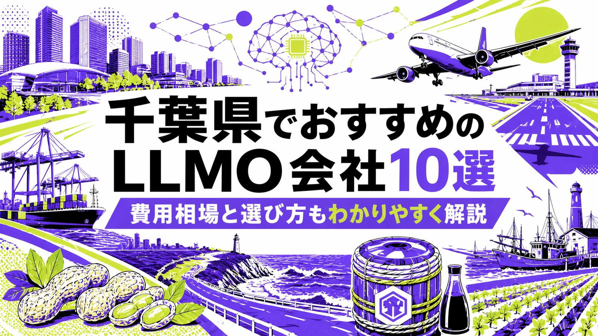
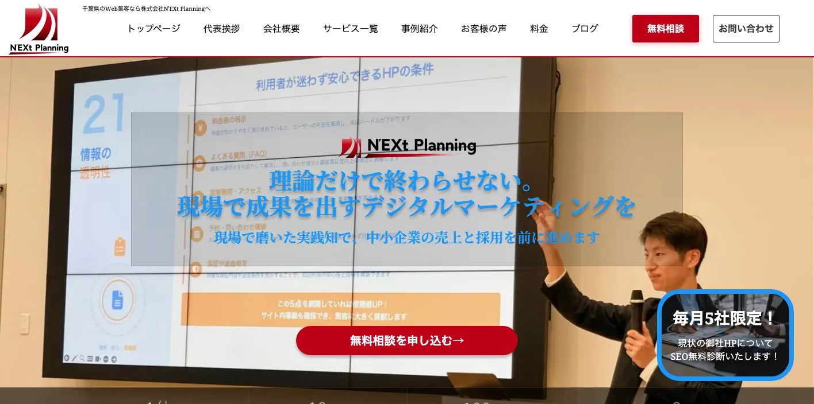
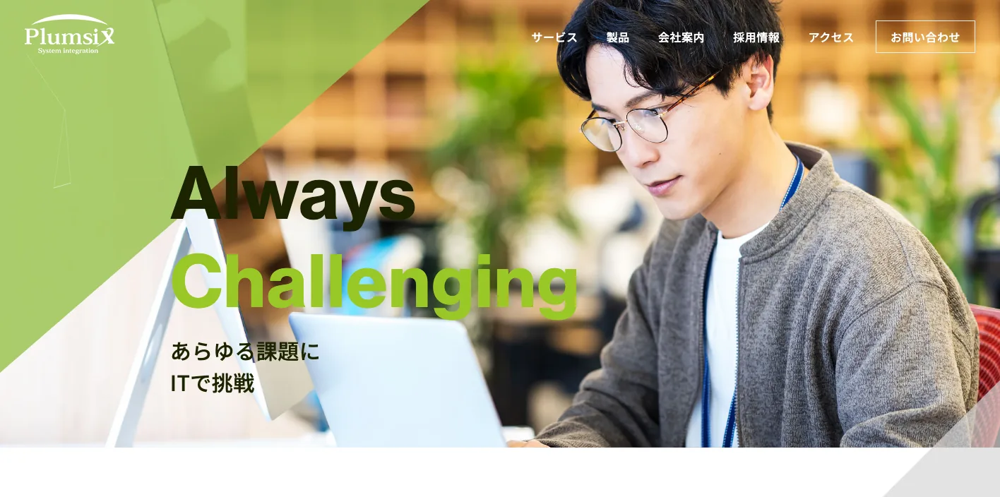
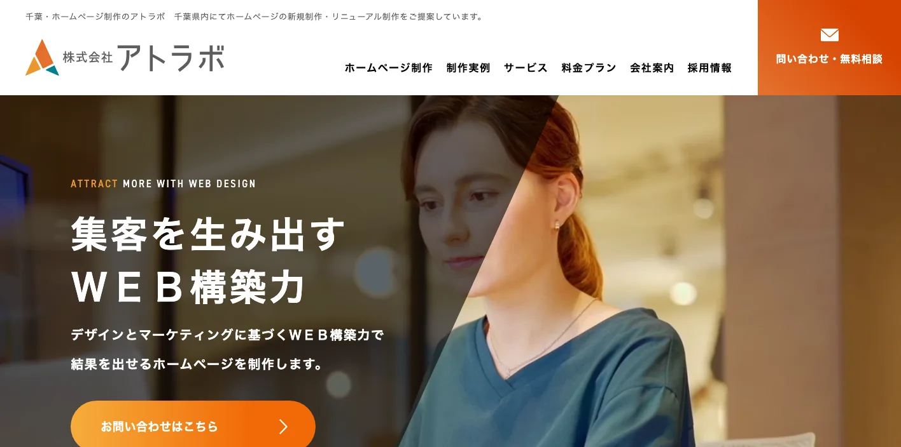
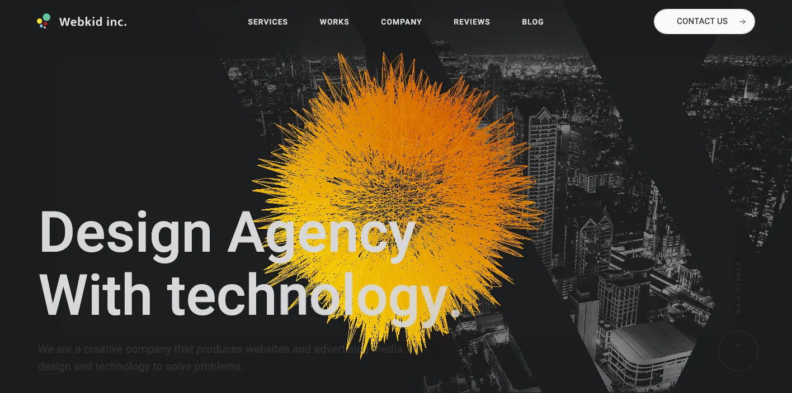
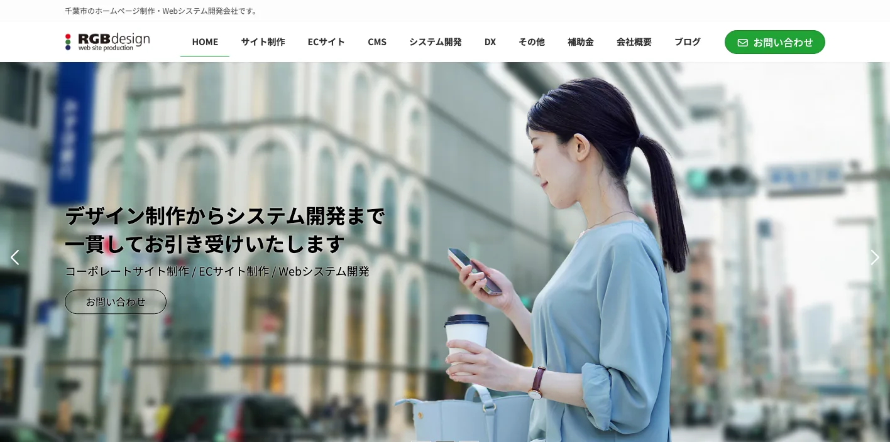
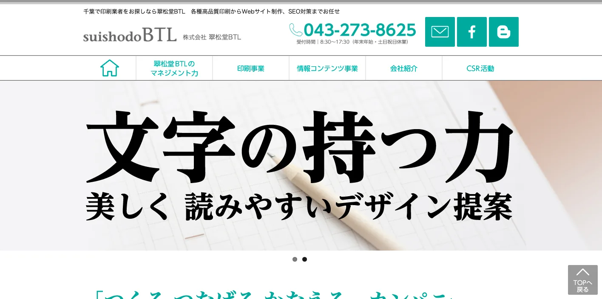
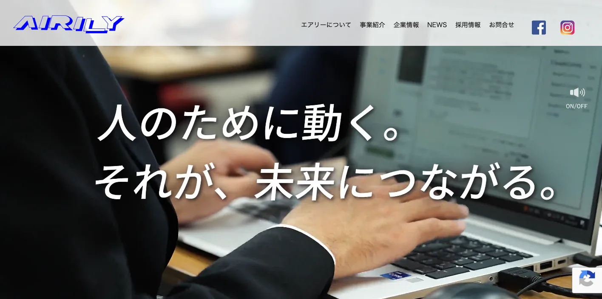
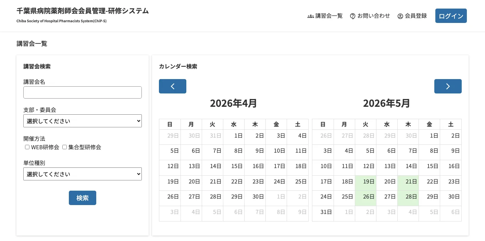
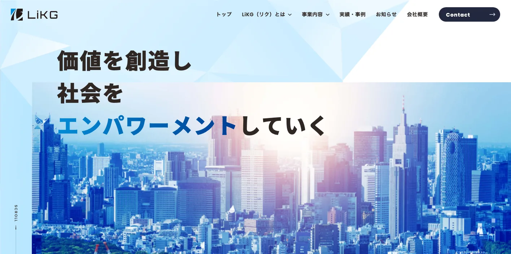

千葉県でおすすめのLLMO会社10選｜費用相場と選び方もわかりやすく解説

千葉県でLLMO会社を選ぶときは、「千葉県のWeb制作会社」や「SEO会社」という探し方だけでは足りません。千葉市・船橋・市川・松戸・柏の生活商圏、成田空港を中心にした国際物流、浦安・舞浜・幕張の観光とイベント、木更津・房総の周遊、京葉臨海部の製造業、農水産品のECでは、AI検索で聞かれる質問が大きく変わるからです。
千葉県の毎月常住人口調査では、2026年2月1日現在の人口は6,272,875人、世帯数は2,958,740世帯です。県の観光統計では、2024年の延べ観光入込客数は1億7,091万人、延べ宿泊客数は2,829万人でした。千葉港は京葉臨海工業地帯を支える国際拠点港湾で、成田空港、東京湾アクアライン、圏央道などの交通条件も県内ビジネスの特徴です。
つまり千葉県のLLMOでは、地域名を入れた記事を量産するだけでは弱いです。生活者向け、観光、物流、製造、医療福祉、採用、BtoB商談ごとに、AIが引用しやすい一次情報を整理する必要があります。基本から確認したい方はLLMO対策の基礎記事、近隣の商圏も見たい方は東京都の比較記事、神奈川県の比較記事、埼玉県の比較記事も参考になります。自社サイトの現状を先に見たい場合は無料LLMO診断から始めると判断しやすいです。
目次

千葉県でおすすめのLLMO会社10選
今回は、千葉県内に拠点があり、Web制作、SEO、Webマーケティング、広告、EC、動画、運用改善などの公開情報を確認しやすい会社を中心に、LLMOを明示している全国対応会社も補完的に加えました。千葉県内でLLMO専業を前面に出す会社はまだ多くありません。そのため、AI検索対策そのものだけでなく、サイト構造、地域ページ、FAQ、事例、写真、採用、更新体制まで支援できる会社を比較対象にしています。
千葉県では、千葉市・船橋・市川・松戸・柏の都市型サービス、成田空港周辺の物流・観光、浦安・舞浜・幕張の集客、木更津・房総の周遊、京葉臨海部の製造業、銚子・九十九里・南房総の農水産まで、必要な情報が変わります。まずは表で向いている企業を確認し、その後に各社の特徴を見てください。
| 会社名 | 拠点性 | 向いている企業 | 支援の軸 |
|---|---|---|---|
| 株式会社N'EXt Planning | 船橋市 | Webマーケティング、SEO、MEO、広告をまとめて改善したい企業 | SEO・MEO・Web広告・SNS・ホームページ制作 |
| 株式会社プラムシックス | 千葉市 | 自治体、学校、病院、法人サイトなど堅実な情報設計を重視する組織 | ホームページ制作・SEO・Webシステム・保守運用 |
| 株式会社アトラボ | 東金市・千葉市 | 外房、九十九里、県東部で地域集客とWeb改善を進めたい企業 | ホームページ制作・SEO・広告・印刷物・採用 |
| 株式会社Webkid | 千葉市 | SEO、動画、イラスト、採用、ブランディングまで相談したい企業 | ホームページ制作・SEO・Web広告・動画・デザイン |
| 株式会社RGBデザイン | 千葉市美浜区 | 幕張周辺でWebシステムやWordPress運用まで整えたい企業 | Web制作・WordPress・システム開発・SEO・広告 |
| 株式会社翠松堂BTL | 千葉市花見川区 | 印刷物、販促、Web、ブランド表現をまとめて整えたい企業 | Web制作・マーケティング・ブランディング・販促物 |
| 株式会社エアリー Web事業部 | 千葉市中央区 | 実績数、SEO、撮影、動画、ECを重視する中小企業 | ホームページ制作・SEO・EC・撮影・動画 |
| リアサポートデザインオフィス千葉本店 | 千葉県内対応 | 小規模事業者や店舗で、費用を抑えてWeb集客を始めたい事業者 | ホームページ制作・SEO・運用・Webコンサルティング |
| 株式会社LiKG | 全国対応 | LLMO診断から記事制作まで任せたい企業 | LLMO診断・LLMO×SEO伴走・記事制作 |
| 株式会社ジオコード | 全国対応 | SEOとAI最適化を実装込みで進めたい企業 | SEO・コンテンツ・AIO/LLMO・実装改善 |
株式会社AIMAは千葉本社の会社ではありませんが、全国対応でLLMO支援を提供しています。月額5万円のLLMO支援は初期費用なし・1ヶ月単位で始められ、質問設計、記事制作、引用チェックに絞って実務を進められます。千葉市、船橋、柏、松戸、市川、成田、浦安、幕張、木更津、房総のように検索文脈が分かれる場合も、まず無料LLMO診断で優先順位を確認できます。
1. 株式会社N'EXt Planning

株式会社N'EXt Planningは、千葉県船橋市前原西を拠点に、Webマーケティング、SEO対策、MEO対策、Web広告、SNS運用、ホームページ制作を案内している会社です。公式サイトでは、中小企業向けにWebを活用した集客支援を行うこと、AIO・LLMO対策にも触れていることを確認できます。
千葉県では、船橋、津田沼、市川、松戸、柏のように駅ごとの生活圏が細かく分かれます。N'EXt Planningは、地域店舗、士業、医療福祉、住宅、採用などで、検索順位だけでなく、GoogleビジネスプロフィールやAI検索で聞かれる質問まで整理したい企業に向いています。
2. 株式会社プラムシックス

株式会社プラムシックスは、千葉市を拠点にホームページ制作、SEO対策、Webシステム開発、運用保守を案内している会社です。公式サイトでは、学校、病院、自治体、企業など幅広い制作実績を確認でき、情報の正確性や更新運用が求められるサイトに強い会社として比較できます。
LLMOでは、AIが会社や団体を正しく理解できるよう、サービス内容、組織情報、FAQ、実績、問い合わせ導線を整理する必要があります。プラムシックスは、千葉市周辺の法人、教育機関、医療機関、公共性の高い団体が、長く使えるWeb基盤を整えたい場合に向いています。
3. 株式会社アトラボ

株式会社アトラボは、千葉県東金市と千葉市を拠点に、ホームページ制作、SEO、MEO、Web広告、採用、印刷物まで案内している会社です。公式サイトでは、千葉県の企業・店舗向けのWeb制作や集客支援を確認できます。
外房、九十九里、東金、茂原、成東、銚子方面では、千葉市中心部とは異なる検索意図があります。観光、地域店舗、工務店、医療福祉、農水産、採用など、地域名と業種名を組み合わせた質問に答える必要がある企業に、アトラボは比較しやすい会社です。
4. 株式会社Webkid

株式会社Webkidは、千葉市を拠点にホームページ制作、SEO、Web広告、動画、イラスト、ロゴ、採用サイト、ブランディングなどを案内している制作会社です。公式サイトでは、SEO対策の料金プランや保守運用、Webサイト制作の価格帯を確認できます。
LLMOでは、文章だけでなく、写真、動画、図解、採用情報、実績、FAQが判断材料になります。Webkidは、千葉市、幕張、船橋、市川、柏周辺の企業が、Webサイトの見た目と検索・AI向けの情報整理を同時に進めたい場合に向いています。
5. 株式会社RGBデザイン

株式会社RGBデザインは、千葉市美浜区の幕張テクノガーデンを拠点に、ホームページ制作、WordPress、Webシステム開発、SEO対策、リスティング広告などを案内している会社です。企業サイト、採用サイト、EC、システム連携まで相談しやすいタイプです。
幕張、海浜幕張、稲毛海岸、千葉みなと周辺では、BtoB、イベント、ホテル、教育、医療、商業施設などの情報が混ざります。RGBデザインは、CMSやシステムも含めて、情報更新を社内で続けやすい形にしたい企業に向いています。
6. 株式会社翠松堂BTL

株式会社翠松堂BTLは、千葉市花見川区幕張町を拠点に、Web制作、マーケティング、ブランディング、プロモーション、印刷物などを案内している会社です。Web単体ではなく、営業資料、販促物、ブランド表現まで含めて整えたい企業に比較しやすい会社です。
千葉県の中小企業では、展示会、地域イベント、観光パンフレット、採用資料、店頭販促とWebサイトが別々になりがちです。LLMOでは、AIが参照するWeb上の情報と、実際の営業・販促で伝える強みを一致させることが重要です。翠松堂BTLは、その整理に向いています。
7. 株式会社エアリー Web事業部

株式会社エアリー Web事業部は、千葉市中央区を拠点にホームページ制作、SEO対策、ECサイト制作、写真撮影、動画制作などを案内しています。公式サイトでは、豊富な制作実績や、千葉県の企業向けのWeb制作サービスを確認できます。
千葉県では、地域店舗、病院、士業、製造業、観光施設、EC事業者など、写真や動画が信頼材料になる業種が多いです。エアリーは、文章だけでは伝わりにくい現場、商品、施設、人の魅力をWeb上に出し、AI検索でも比較されやすい情報にしたい企業に向いています。
8. リアサポートデザインオフィス千葉本店

リアサポートデザインオフィス千葉本店は、千葉県内の小規模事業者や店舗向けに、ホームページ制作、SEO、運用、Webコンサルティングを案内している制作サービスです。公式サイトでは、費用を抑えた制作プランや地域密着のサポートを確認できます。
小さな店舗や地域サービスのLLMOでは、難しい専門施策よりも、営業時間、料金、予約、アクセス、駐車場、対応エリア、よくある質問をきちんと載せることが先です。リアサポートは、千葉県内でまずWeb集客の土台を作りたい事業者に向いています。
9. 株式会社LiKG

株式会社LiKGは、LLMOコンサルティングを明確に打ち出している全国対応会社です。公式ページでは、LLMO診断、LLMO×SEOコンサルティング、EEAT強化記事制作を案内し、AI OverviewやChatGPTでの露出状況調査、改善レポート、構造化データ改善指示、記事構成作成などを説明しています。
千葉県の企業でも、すでにサイトや記事があり、AI検索でどう出ているかを診断したい場合に向いています。医療福祉、住宅、観光、物流、製造、採用、BtoBの一次情報を持っているのにAI検索で拾われていない会社は、診断から始める価値があります。
10. 株式会社ジオコード

株式会社ジオコードは、SEO対策、コンテンツマーケティング、Web制作、Web広告、AIO・LLMOなどAI最適化まで案内している全国対応会社です。公式サイトでは、SEO・コンテンツ・オウンドメディアからAI最適化まで支援するサービス構成を確認できます。
千葉県内でも、県外商圏を持つBtoB企業、EC企業、採用を強める企業では、地場制作会社だけでなく全国のSEO会社も比較対象になります。ジオコードは、SEOとLLMOを分けず、分析から実装まで任せたい企業に向いています。
千葉県のLLMO会社を比較する際のポイント
ここでは、会社紹介で触れた個別の特徴とは別に、千葉県で比較するときの判断軸を整理します。ポイントは、県内の広さを「一つの千葉県」として扱わないことです。AI検索では、地名、移動手段、目的、業種、利用者の不安がセットで質問されます。
千葉市・船橋・市川・松戸・柏の生活商圏を分けられるか
千葉市、船橋、市川、松戸、柏は人口規模も利用者の動きも大きい地域です。ただし、同じ都市部でも、千葉市は行政・商業・医療・大学、船橋は交通結節と買い物、市川・松戸は東京近接の住宅地、柏は東葛エリアの広域拠点というように、選ばれる理由が違います。
医療、士業、住宅、教育、美容、飲食、介護などの会社は、「千葉県対応」とだけ書くより、どの市のどんな不安に答えるのかを分ける必要があります。LLMO会社を選ぶときは、市別ページ、FAQ、事例、アクセス情報、Googleビジネスプロフィールまで一貫して整えられるかを見てください。
成田空港、千葉港、木更津港、圏央道の導線を説明できるか
千葉県は、成田空港、千葉港、木更津港、京葉道路、東関東道、館山道、圏央道、東京湾アクアラインなど、物流・移動の導線が強い県です。BtoB企業、物流会社、倉庫、製造業、貿易関連、ホテル、観光事業者では、対応エリアや移動条件がそのまま比較材料になります。
AI検索では、「成田空港近くで海外発送に強い会社」「千葉港周辺で倉庫を探したい」「木更津から都内へ配送できる会社」のように、地名と目的が組み合わされます。LLMO会社には、単なるSEO記事ではなく、設備、許認可、実績、配送条件、納期、問い合わせ前の不安を整理する力が必要です。
浦安・舞浜・幕張・成田山・房総の観光質問に答えられるか
千葉県は観光の幅が広い県です。浦安・舞浜、幕張メッセ周辺、成田山、木更津、館山、鴨川、南房総、九十九里、銚子では、検索される質問が違います。観光や宿泊では、営業時間や料金だけでなく、所要時間、雨天、子連れ、駐車場、混雑、周遊、外国人対応まで説明する必要があります。
観光事業者がLLMO会社を選ぶなら、季節性やイベント情報を更新できる体制を見てください。AI検索に古い情報が残ると、ユーザーの不満につながります。施設ページ、FAQ、アクセス、予約、周辺観光、写真、口コミ導線まで整える会社が向いています。
京葉臨海部や内陸工業団地のBtoB情報を言語化できるか
京葉臨海部は、石油化学、鉄鋼、エネルギー、物流などの産業が集積する地域です。また、内陸部にも食品、金属、機械、印刷、建材、物流などの企業があります。BtoBのLLMOでは、一般向けの読みやすい記事だけでは不十分です。
必要なのは、設備、加工範囲、素材、ロット、品質管理、納入実績、対応エリア、問い合わせ前に確認したい条件を、専門性を保ったまま分かりやすく整理することです。AIが技術領域を誤解しないよう、製品ページ、事例、FAQ、会社情報をつなげて設計できる会社を選びましょう。
農水産品、地域ブランド、ECでは「買う前の質問」を拾えるか
千葉県には、落花生、梨、米、野菜、海産物、醤油、加工食品など、地域性の強い商品が多くあります。ECや観光土産では、産地、旬、保存方法、配送、ギフト、アレルギー、法人利用、ふるさと納税、店舗受け取りなど、購入前の質問が多くなります。
LLMO会社には、商品ページをきれいに作るだけでなく、購入前の不安をFAQや比較表に落とし込む力が必要です。千葉県の地域ブランドを扱う会社は、写真、ストーリー、産地情報、作り手の情報、配送条件までAIが理解できる形に整理できるかを確認してください。
県内密着か全国対応かを、作業内容で選べるか
千葉県内の会社は、地域の感覚、撮影、打ち合わせ、現場取材、店舗支援に強いことが多いです。一方で、LLMO専業やSEO大手は、AI検索の診断、構造化データ、既存記事の改善、全国競合の比較に強い場合があります。
どちらが正しいというより、作業内容で選ぶのが現実的です。現場撮影や店舗改善が必要なら県内会社、AI検索での露出状況を分析したいならLLMOを明示している会社、両方必要なら県内制作会社と全国LLMO会社の分担も選択肢になります。
参考：千葉県毎月常住人口調査月報、令和6年観光客の入込動向（確定値）、千葉港のセールスポイント
千葉県のLLMO会社に依頼する費用相場
LLMOの費用は、診断だけなのか、記事制作まで含むのか、サイト改修や撮影まで必要なのかで変わります。千葉県では、都市部の生活サービス、観光、物流、製造、農水産ECのように、追加で作るべきページやFAQの量が業種によって大きく変わります。
| 依頼内容 | 費用目安 | 千葉県での考え方 |
|---|---|---|
| LLMO診断・AI検索の現状確認 | 無料〜10万円前後 | まず自社名、地域名、業種名でAIにどう出るかを見る段階 |
| 小規模なSEO・LLMO運用 | 月額5万円〜15万円前後 | FAQ、地域ページ、既存記事改善を小さく回す段階 |
| 伴走型のSEO・LLMO支援 | 月額15万円〜30万円前後 | 競合調査、構成作成、構造化データ、改善提案、定例を含む段階 |
| サイト制作・改修込み | 30万円台〜150万円超 | 撮影、採用、EC、予約、システム連携の有無で広がる |
| 広域・多店舗・BtoBの本格運用 | 月額30万円以上 | 複数市町村、製品カテゴリ、営業資料、事例制作まで必要な段階 |
まずは診断だけなら無料〜10万円前後から始めやすい
最初にやるべきことは、AI検索で自社がどう扱われているかを確認することです。自社名、サービス名、地域名、競合名、料金、評判、比較などで質問し、AIが何を根拠に回答しているかを見ます。
千葉県の場合、「船橋 整骨院 おすすめ」「成田空港近く 物流会社」「幕張 イベント 宿泊」「千葉市 採用 強い会社」のように、地名と目的の組み合わせが多くなります。いきなり記事を増やす前に、どの質問で選ばれるべきかを決めると無駄が減ります。
小さく始めるなら月額5万円〜15万円帯が入口になる
小規模事業者や地域店舗なら、最初から大きな予算を組む必要はありません。既存ページの見出し改善、FAQ追加、会社情報の整理、地域ページの追加、Googleビジネスプロフィールの見直しだけでも、AIが理解しやすい状態に近づきます。
千葉市、船橋、市川、松戸、柏のような生活商圏では、ユーザーの不安が細かいです。料金、予約、駐車場、駅からの距離、対応エリア、キャンセル、保険、比較理由など、基本情報を丁寧に出すことが、この価格帯の現実的な成果になります。
伴走支援の中心帯は月額15万円〜30万円前後
毎月改善を続けるなら、月額15万円〜30万円前後が一つの中心帯です。この価格帯では、競合調査、AI検索での露出調査、記事構成、既存ページ改善、構造化データ、レポート、定例打ち合わせまで含まれやすくなります。
千葉県の企業では、観光、物流、製造、医療福祉、採用など、情報の棚卸しが必要な業種ほど伴走支援が向いています。社内に担当者がいるなら、LLMO会社には戦略と構成を任せ、社内で一次情報を出す形にすると費用対効果が上がります。
制作・撮影・EC・採用まで含めると総額は広がる
ホームページを作り直す、写真撮影をする、動画を作る、採用ページを整える、ECや予約システムとつなぐ場合は、費用が大きく変わります。千葉県では、観光施設、飲食、ホテル、医療、住宅、製造、農水産ECで、写真や事例が成果に直結しやすいです。
制作費だけを見るのではなく、公開後に誰が更新するのか、FAQを追加できるのか、AI検索での出方を見て直せるのかを確認してください。安く作っても、情報が古くなればLLMOの効果は落ちます。
県内広域を狙うなら地域ページとFAQの量を見積もる
千葉県は広いので、千葉市だけを狙う場合と、船橋・市川・松戸・柏・成田・浦安・木更津・館山まで狙う場合では、必要なページ数が変わります。複数市町村を狙うなら、地域ページ、事例、FAQ、アクセス、対応エリアの設計が増えます。
ただし、地名だけを差し替えた薄いページは逆効果です。各地域の商圏、交通、利用者の不安、提供できるサービスの違いまで書けるかが重要です。見積もりでは「何ページ作るか」だけでなく、「各ページで何を答えるか」まで確認しましょう。
参考：株式会社Webkid｜SEO対策、株式会社LiKG｜LLMOコンサルティング、株式会社ジオコード｜SEO対策
千葉県のLLMO会社に関するよくある質問
千葉県のLLMO会社に依頼する意味はありますか？
あります。千葉県は千葉市、船橋、市川、松戸、柏の都市部に加え、成田空港、浦安・舞浜、幕張、木更津、房総観光、京葉臨海工業地帯、農水産品の文脈が分かれます。地域と業種ごとの質問に答えられる情報を整える意味があります。
千葉県内の会社でないとLLMOは任せられませんか？
必ずしも県内本社である必要はありません。重要なのは、千葉市・船橋・柏などの生活商圏、成田空港や湾岸物流、房総観光、製造業、医療福祉などの違いを理解し、AIに伝わるページ構造とFAQを作れるかです。
千葉市・船橋・柏・松戸・市川では、何を分けて考えるべきですか？
生活者向けサービスでは、通勤圏、駅導線、駐車場、予約、子育て、医療、教育、住宅の不安が違います。同じ千葉県内でも市名だけを差し替えるのではなく、商圏ごとの選ばれる理由を分けて説明する必要があります。
成田空港や湾岸物流に関係する会社でもLLMOは有効ですか？
有効です。空港、港湾、高速道路、倉庫、配送、越境、インバウンド、法人取引の情報はAI検索で比較材料になります。対応エリア、納期、設備、許認可、実績、FAQを整理すると、AIが会社の強みを理解しやすくなります。
浦安・舞浜・幕張・房総など観光地でもLLMOは効果がありますか？
あります。観光では、アクセス、所要時間、混雑、駐車場、雨天、子連れ、宿泊、周遊、予約、外国人対応などがAI検索で聞かれやすいです。施設情報と季節情報をFAQ化すると比較回答に入りやすくなります。
千葉県の製造業・BtoB企業でもLLMOは必要ですか？
必要です。京葉臨海部や内陸工業団地のBtoB企業では、設備、加工範囲、品質管理、対応ロット、納入実績、技術資料、営業エリアを整理することが重要です。専門情報をAIが引用しやすい形にする価値があります。
千葉県のLLMO費用はどれくらい見ておけばよいですか？
小さく始めるなら月額5万円から15万円前後、診断だけなら10万円前後、伴走支援は月額15万円から30万円前後が目安です。撮影、サイト改修、地域ページ制作、採用やECまで含めると総額は大きく変わります。
成果が出るまでの期間はどれくらいですか？
一般的には3か月から6か月が目安です。既存サイトの情報量、競合の強さ、FAQや事例の整備状況、構造化データ、更新体制によって変わります。短期で断定せず、AI検索での見え方を観測しながら改善する進め方が現実的です。
千葉県でLLMO会社を選ぶなら、地域の広さと産業の違いをそのまま設計に反映しましょう
千葉県のLLMO会社選びでは、千葉市・船橋・市川・松戸・柏の生活商圏、成田空港と湾岸物流、浦安・舞浜・幕張の観光とイベント、房総の周遊、京葉臨海部の製造業、農水産ECを分けて考えることが重要です。同じ県内でも、AI検索で聞かれる質問はかなり違います。
まずは、自社が「近隣の生活者」を狙うのか、「県内広域の見込み客」を狙うのか、「物流・製造・観光・ECなど目的検索」を狙うのかを決めてください。そのうえで、戦略だけでなく、ページ改修、記事制作、FAQ、構造化データ、写真、更新運用まで実行できる会社を選ぶと前に進めやすいです。迷う場合は、LLMO対策の基礎を確認し、必要なら無料LLMO診断やお問い合わせから、自社がどの質問で選ばれるべきかを整理していきましょう。